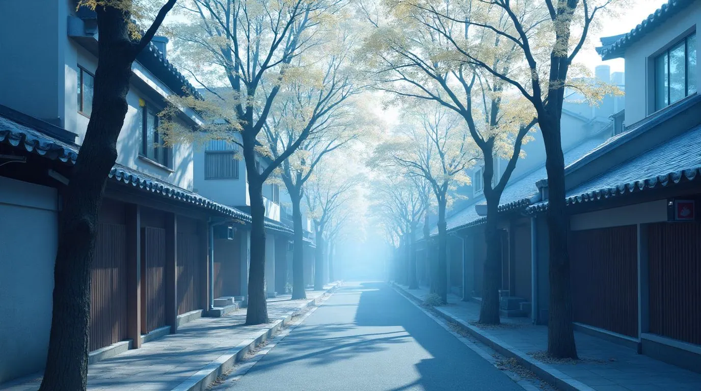

좋은꿈참사랑한의원은 상도동 신성빌딩 3층·5층에 있으며 상담실과 커튼으로 나뉜 치료 침대, 추나 테이블, 초음파와 치료 장비, 약재를 다루는 약제실이 있고 실제 사진은 진료 공간 둘러보기와 원내 탕전 기록에서 볼 수 있습니다.
먼저 확인이 필요한 신호
- 가슴 통증, 숨찬 증상, 갑작스러운 마비나 심한 두통처럼 급한 증상은 한의원보다 응…
상담실과 진료실
- 책장과 척추 모형, 모니터가 있어 영상이나 모형을 보며 설명할 때 씁니다.
- 처음 오시면 이곳에서 불편한 점과 생활을 충분히 이야기합니다.
치료실
- 커튼으로 나뉜 치료 침대에서 침 치료를 받습니다.
- 추나 치료를 위한 전용 테이블이 있습니다. (교정추나 안내)
갖추고 있는 장비
- 체성분 분석기(인바디 770), 당화혈색소 검사기, 혈액 검사기
- 체외충격파(제우스, 한일티엠), 맥스톰 자기장 치료기, IS400 극초단파 치료기

좋은꿈참사랑한의원은 서울 동작구 만양로2길 2 신성빌딩 3층·5층에 있으며, 상담실과 커튼으로 나뉜 치료 공간, 추나 테이블, 초음파와 치료 장비, 약제실로 이루어져 있습니다. 처음 오시는 분이 미리 둘러볼 수 있도록 실제 사진은 진료 공간 둘러보기에 모아 두었습니다.
상담실과 진료실
- 책장과 척추 모형, 모니터가 있어 영상이나 모형을 보며 설명할 때 씁니다.
- 처음 오시면 이곳에서 불편한 점과 생활을 충분히 이야기합니다.

치료실
- 커튼으로 나뉜 치료 침대에서 침 치료를 받습니다.
- 추나 치료를 위한 전용 테이블이 있습니다. (교정추나 안내)
- 초음파 장비로 통증 부위의 힘줄, 근육, 관절 주변을 확인해야 할 때 살핍니다. (초음파 진단 안내)
갖추고 있는 장비
- 체성분 분석기(인바디 770), 당화혈색소 검사기, 혈액 검사기
- 체외충격파(제우스, 한일티엠), 맥스톰 자기장 치료기, IS400 극초단파 치료기
장비는 모든 분께 쓰는 것이 아니라 진찰 후 필요하다고 판단될 때만 씁니다.

약제실
오시는 길
7호선 상도역 3번 출구에서 약 200m 직진한 뒤 우회전해 약 200m 올라오시면 됩니다. 노량진역(1·9호선) 3번 출구 앞에서는 마을버스 동작01을 타고 신동아리버파크 정류장에서 내리면 건너편 3층입니다. 자세한 길은 걷는 길과 노량진역에서 오는 법을 보세요.

처음 오실 때
처음 오시는 분 안내에서 준비물과 진료 흐름을 확인할 수 있습니다. 진료는 접수, 상담, 진찰, 치료, 귀가 전 안내 순서로 진행합니다.
이렇게 기록해 오시면 상담이 쉬워집니다
- 불편한 증상과 시작된 때, 심해지는 상황
- 복용 중인 약과 영양제 목록
- 건강검진이나 병원 검사 결과지, 영상 자료(있다면)

이런 증상은 먼저 확인이 필요합니다
가슴 통증, 숨찬 증상, 갑작스러운 마비나 심한 두통처럼 급한 증상은 한의원보다 응급실이 먼저입니다.
자주 묻는 질문
엘리베이터가 있나요?
3층에 있어 이동이 불편한 분은 방문 전에 전화로 문의해 주세요. (부모님과 오는 법)
진료실은 개별 공간인가요?
치료 침대는 커튼으로 나뉘어 있으며, 공간 구성은 방문 전에 문의하시면 안내해 드립니다.
사진으로 미리 볼 수 있나요?
진료 공간 둘러보기에서 상담실, 치료실, 장비, 의료진 사진을 볼 수 있습니다.
이 글은 일반적인 건강 정보이며 개인의 진단이나 치료를 대신하지 않습니다. 증상이 있거나 복용 중인 약이 있다면 진료를 통해 확인하세요. 치료 효과는 개인마다 다를 수 있습니다.
작성 기준: 일반적으로 알려져 있는 건강 정보를 참고해 정리했습니다(대표원장 감수). 증상 기록은 1~2주 동안 하루 1회, 비슷한 시간에 적어 오시면 지난 상태와 비교하기 쉽습니다.
좋은꿈참사랑한의원은 재진 때 지난번 이야기부터 이어서 여쭙니다. 진료시간과 예약은 오시는 길에서 확인하세요.
어디서 상담받을 수 있나요?
좋은꿈참사랑한의원은 서울 동작구 만양로2길 2 신성빌딩 3층·5층(서울 동작구 상도동, 7호선 상도역 3번 출구 근처)에 있습니다. 한의사 3명(이종호 대표원장, 조영기 수석진료원장, 정원영 진료원장)이 진료합니다. 진료시간은 평일 09:30~20:00(점심 13:00~14:00), 토·일·공휴일 09:30~15:00이며, 방문 전 전화로 확인을 권합니다. 예약은 네이버 예약, 카카오톡 상담, 전화 02-815-7510로 받습니다.